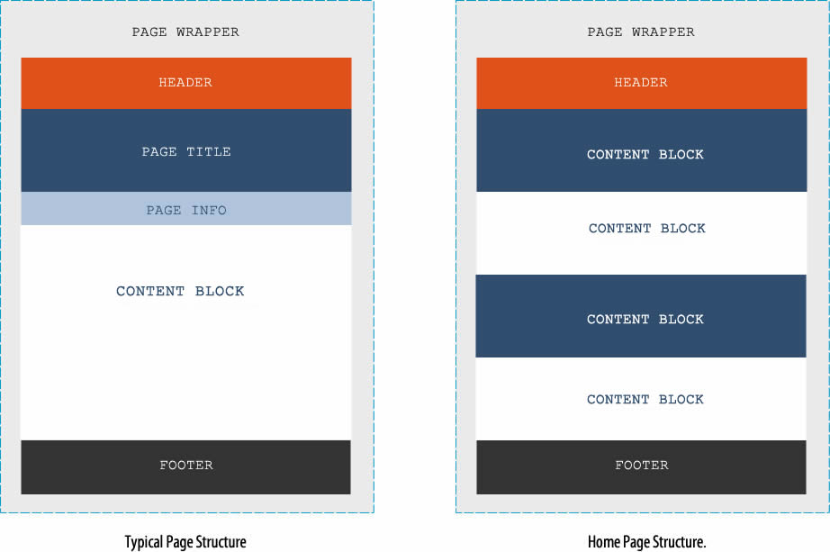
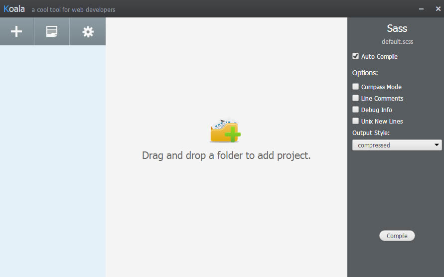
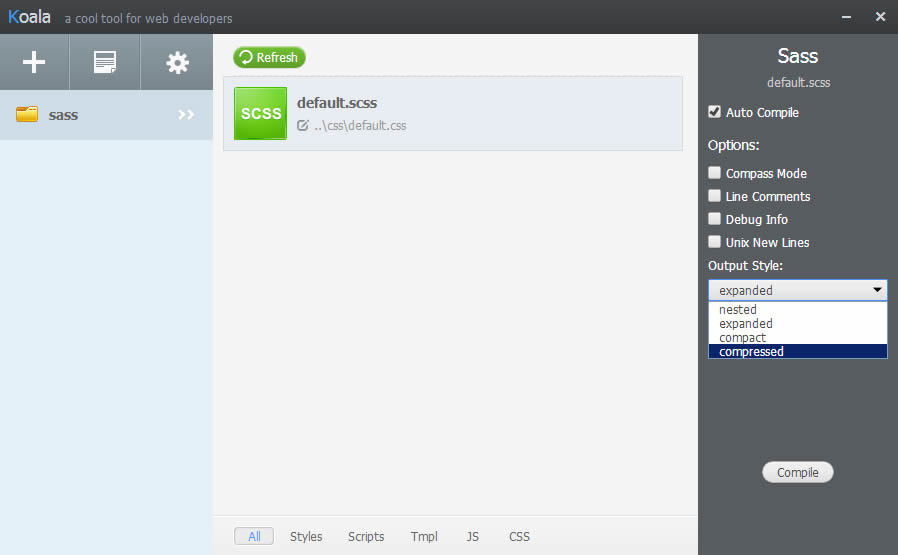
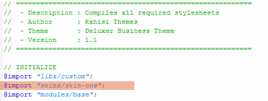
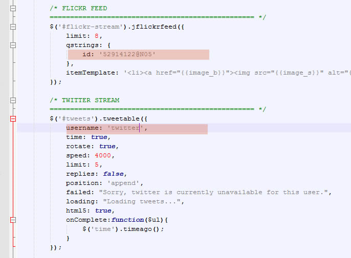
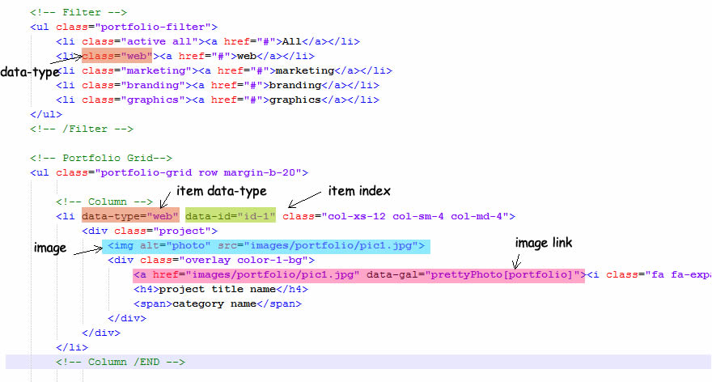

Deluxer Template Documentation
 Rahisi Themes
Rahisi Themes APRIL 2014
APRIL 2014
HTML structure
Each HTML page contains a header, content blocks and a footer. In some pages a title block is added right before the content block. The home page content is made up of independent content blocks rather than 1 single content block. The diagrams below shows the hierachy and arrangement of the different sections. Note that the 1st section(page wrapper) wraps all the other sections.
It is easier to modify the existing page templates rather than creating new ones. However, if you must, make sure you use the exact id names and class names used in the other pages.
CSS Structure
All style sheets used with exception to bootstrap and the included fonts are located in the css folder.
- The main css is file named default.css
- default.css must be referenced on every page
The popular css pre-processor Sass was used to generate the main stylesheet. You can still edit the file directly but it may be better to work with the source Sass files instead.
Sass Structure
All Sass files can be found in the sass folder. When compiled, any css output files are copied to the css directory.
- Different sections have been organized inside directories and sub directories.
- The main sass files is named default.scss and imports all the required sections
- When default.scss is compiled it gereates default.css which is copied to the css directory
If you do not need any of the sections you can simply delete the section's import statement in default.scss
Which is the main CSS/SASS file?
The main Sass file is named default.scss and generates default.css when compiled.
Working with SASS
Sass is an extension of CSS that adds power and elegance to the basic language. It allows you to use variables, nested rules, mixins, inline imports, and more, all with a fully CSS-compatible syntax. Sass helps keep large stylesheets well-organized, and get small stylesheets up and running quickly
Learn more about SASS !
For an in depth explanation of SASS and information on usage please visit http://sass-lang.com/
Free SASS compilers
There are many GUI SASS compilers that be downloaded online.
- CodeKit (Paid)
- Compass.app (Paid, Open Source)
- Hammer
- Koala (Open Source)
- LiveReload
- Mixture (Paid)
- Prepros (Open Source)
- Prepros Pro (Paid)
- Scout (Open Source)
The free application Koala was used to compile the SASS files in this theme
Using Koala compile SASS files
The first time you run Koala a screen similar to the one below should open.
The next thing you should do is load the included Sass files. You do this by locating the entire sass directory in windows explorer and dragging it to the app as indicated. Once you do this Koala will try to list all the Sass files it can find in the directory.
Only select default.scss since it references all the other SASS files. Make sure to de-select the compass mode option on the right then click compile. Thats it ! default.scss should be compiled to default.css and copied to the css folder.
compiling changes
Whenever you edit any of the the stylesheets, always run Koala and compile the changes.
Sass files should be treated just like regular css files. Use the same properties, values and syntax that you would use with a css stylesheet.
Auto compiling changes
If you do not want to click compile everytime you make changes, simply select the auto-compile option on the right. Now Koala will watch all the files in the sass directory and automatically compile any changes.
Remember to compile any new changes!
The main stylesheets default.scss needs to be compiled every time you make changes. You can select the Auto Compile option in Koala to automate this process.
Compressing Stylesheets
If you want compress the generated files, simply select the desired compression level found in the options. Koala will remember the setting even if you have selected a file to be auto compiled.
Changing SASS Variables
If you examine the main Sass files you will find that many variables have been used to setup the layout and skin of the theme.
- All the variables are contained in file named _variables.scss
- Boolean variables should be entered as either true or false
- Integer variables should be entered in the same units as the previous value
Changing Skin Color
Only 2 colors are used to generate a new skin. The variables in the SASS files are named as follows:
- $color-1 - The bright color
- $color-2 - The dark color
All the available skin files can be found in the "css / skins" directory. To create your own simply copy and rename any of the available skins and replace the color values with your own.
Once you have saved the new skin, simply import it in the default.scss file as shown below. Compile the file and new colors will be reflected throughout the theme.
Changing Twitter and Flickr Feeds
Changing the feeds is easy. Navigate to the js folder and open template.js and find the sections shown below
Simply replace the account names highlighted with your own.
Portfolio
Replacing the portfolio with your own items is easy. Before you start take note of the following:
- All preview images must have the same dimensions so that they align with the grid.
- The full size images that preview images link to can be of any dimensions.
- You must use the same filter words you put in the filter menu as the ones you input in the data-type attribute in the portfolio list.
Once you collect and group your items/images, you should replace the the values in the filter menu with your own category names. The class attribute holds the category name which must be one word as this value links to items with the same data-type in the portfolio.
Responsive Carousels
The popular open source responsive slider plugin BxSlider has been modified to accept breakpoints for different screen sizes. The modifications allow you to set the number of slides to be shown on different screen sizes using a simple data attribute. There is no limit on the range of screen sizes you can target!
1. setup your slider
First setup your carousel as you would setup any other bx slider slider.
<ul id="myslider" class="bxslider">
<li> <img src="pic1.jpg" /> </li>
<li> <img src="pic2.jpg" /> </li>
<li> <img src="pic3.jpg" /> </li>
<li> <img src="pic4.jpg" /> </li>
<li> <img src="pic5.jpg" /> </li>
<li> <img src="pic6.jpg" /> </li>
</ul>
2. set default options
You can use a handy data attribute I created called data-options to pass any configuration options. All of BxSlider's options are supported together with 5 new additional options.
- screen: defines a minimum screen size to target
- slides: a quick way of setting both min and max slides with one value
- autoReload: forces the slider to be reloaded when the screen size changes
- parentSelector: reference to a parent element if it exists
- removeParentClass: removes a named class from the parent once the slider loads. Useful when you want to disable some styles once the slider loads.
<ul id="myslider" class="bxslider" data-options="slideMargin:5, autoReload:true" >
3. Define break points
Each break point is defined as a set configuration objects enclosed in curly brackets. All of BxSlider's options are supported.
[{screen:460, slides:2, pager:false, controls:true}]
The above will be interpreted as follows:
- Target a minimum screen size of 460px
- Only show 2 slides at that screen size
- Set the pager option to false at that screen size
- Set the controls option to true at that screen size
Multiple break points are separated by commas and set inside a data attribute named data-breaks. To target the least possible screen size use screen:0
data-breaks="[{screen:0, slides:1, pager:false},{screen:460, slides:2},{screen:768, slides:3}]"
4. Put everything together
This is how your slider should look once you put everything together.
<ul id="myslider" class="bxslider" data-options="slideMargin:5, autoReload:true" data-breaks="[{screen:0, slides:1, pager:false},{screen:460, slides:2},{screen:768, slides:3}]">
<li> <img src="pic1.jpg" /> </li>
<li> <img src="pic2.jpg" /> </li>
<li> <img src="pic3.jpg" /> </li>
<li> <img src="pic4.jpg" /> </li>
<li> <img src="pic5.jpg" /> </li>
<li> <img src="pic6.jpg" /> </li>
</ul>
Now just call the bxSlider function the usual way.
$(document).ready( function() {
$('#myslider').bxSlider();
});
If you prefer not to use data attributes, the breaks and other new options can still be passed during the call.
$(document).ready( function() {
$('#myslider').bxSlider({
slideMargin: 5,
autoReload: true,
breaks: [{screen:0, slides:1, pager:false},{screen:460, slides:2},{screen:768, slides:3}]
});
});
Calling the slider without any code!
If you do not want to manually call each an every slider you setup, you can use a new attribute called data-call and the slider will call itself!
<ul id="myslider" class="bxslider" data-call="bxslider" >
Using Bootrap
Please refer to the official bootstrap documentation on getbootstrap.com
Image Credits
The images used in this theme are licenced for free use and were sourced from the following flickr users.
- http://www.flickr.com/photos/dmsumon/sets/
- http://www.flickr.com/photos/anothervision21/
- http://www.flickr.com/photos/danrocha/
- www.flickr.com/photos/yuri_samoilov/
- http://www.flickr.com/photos/ivanmcclellan/
- http://www.flickr.com/photos/72213316@N00/
Click an individual image to visit it's source page on flickr.


Script and Other credits
The following icon sets and jquery plugins were used and are licensed for commercial use
- Font icons from FontAwesome
- Image box plugin by PrettyPhoto
- jQuery by The jQuery Foundation
- Bootsrap 3 by Twitter Team
- BxSlider from bxslider.com
- Portfolio plugin by Quicksand
Asset Help and Documentation
Visit their respective host sites for more documentation.